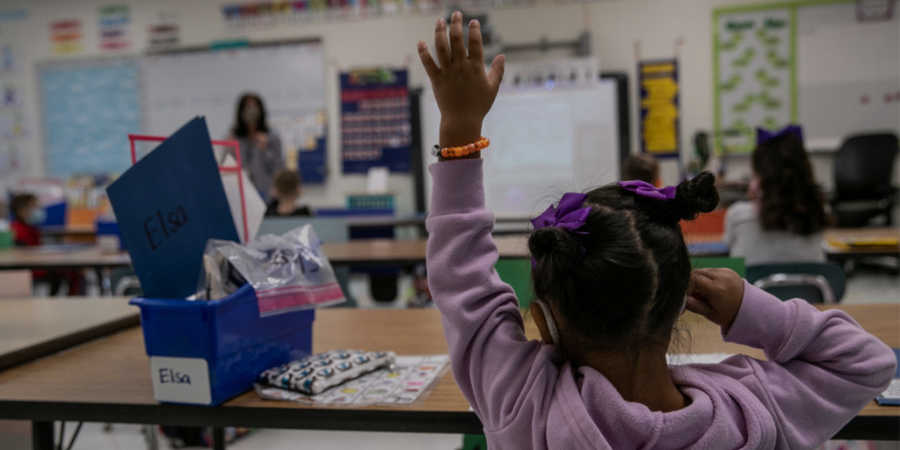
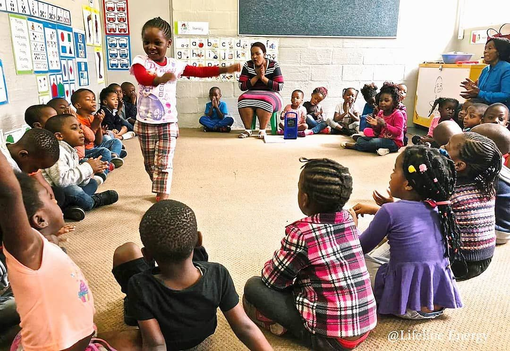

Early Childhood Development Centre
Is a non-profit organization that is committed to putting young children first by ensuring quality early childhood development for our country's youngest citizens.


Early Childhood Development Centre
Is a non-profit organization that is committed to putting young children first by ensuring quality early childhood development for our country's youngest citizens.
We provide training, resources and support in the field of Early Childhood Development, enhancing individual and organization capacity. We develop disseminate resources and we carry our research specificalty related to the African content.
We provide training, resources and support in the field of Early Childhood Development, enhancing individual and organization capacity. We develop disseminate resources and we carry our research specificalty related to the African content.
We provide training, resources and support in the field of Early Childhood Development, enhancing individual and organization capacity. We develop disseminate resources and we carry our research specificalty related to the African content.
What Makes Us Unique?
The ECDC employs degreed teachers. Quality in early childhood programmes is directly corelated with teachers who have the knowledge, education and skills to teach young children. ECDC teachers understand child development, know how children learn and the most effective curriculum for young children to develop knowledge, skills attributes and a disposition for learning now and into the future.

Our programmes promote the holistic development of young children and contribute towards increasing access and improving the quality of ECD in South Africa.
Integrated ECD Programmes
Our Integrated ECD Programme approach to working with communities focuses on the growth and development of ECD centres through mentoring, coaching and providing support to governing bodies, principals and staff members to improve their services to young children. We offer a package of support to ECD centres based on their needs. The aim is to ensure ECD centre sustainability and to promote a quality early learning environment.

Our programmes promote the holistic development of young children and contribute towards increasing access and improving the quality of ECD in South Africa.
Family Outreach Programmes
Our Integrated ECD Programme approach to working with communities focuses on the growth and development of ECD centres through mentoring, coaching and providing support to governing bodies, principals and staff members to improve their services to young children. We offer a package of support to ECD centres based on their needs. The aim is to ensure ECD centre sustainability and to promote a quality early learning environment.
Our programmes promote the holistic development of young children and contribute towards increasing access and improving the quality of ECD in South Africa.
ECD Centre Registration
Our Integrated ECD Programme approach to working with communities focuses on the growth and development of ECD centres through mentoring, coaching and providing support to governing bodies, principals and staff members to improve their services to young children. We offer a package of support to ECD centres based on their needs. The aim is to ensure ECD centre sustainability and to promote a quality early learning environment.
Follow Us On Social Media